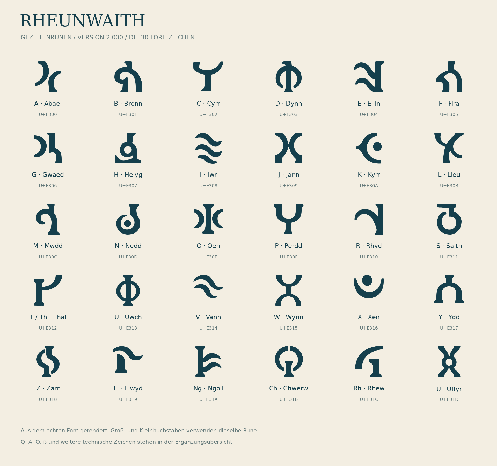

Rheunwaith: Gezeitenrunen
Was die Quellen festlegen
Die bereitgestellten Dateien beschreiben Rheunwaith als ein Alphabet aus 30 benannten Runen. Sie enthalten die Tastaturbelegung, fünf Doppelzeichen und die technischen Regeln der bisherigen Schrift. Version 2 überträgt diese Angaben in die vom Nutzer gewählte Gestaltung II, Gezeitenrunen.
Die Quellen enthalten keine vollständige Grammatik, Aussprachetabelle, Wortübersetzungen oder magischen Einzelbedeutungen der Runennamen. Darum wird hier keine zusätzliche Sprachlehre als überlieferter Inhalt ausgegeben. Das Handbuch enthält den vollständigen dokumentierten Bestand, nicht eine erfundene Übersetzungssprache. Gawain und Tristan sind Beispieltexte der Vorlage.
Die Gestaltung
Gezeitenrunen verbinden kräftige, meist aufrechte Stämme mit breiten Rundungen, offenen Innenräumen und kurzen keilförmigen Abschlüssen. Die ruhige Wasseranmutung entsteht in den Formen selbst. Farbe, Pergament und Leuchten sind keine Bestandteile der Fontdatei.
16 Hauptformen stammen aus der gewählten Stilvorlage. Die zwölf weiteren Lore-Zeichen und Ersatzformen für N und O wurden passend ergänzt. N und O waren im Bild nahezu identisch mit anderen Zeichen. Für X, Ng und das zusätzliche ß wurden einzelne Ergänzungsformen gedreht oder gespiegelt. Q und ß sind zwei zusätzliche Masterformen außerhalb des kanonischen Alphabets.
Vollständige Belegung
Die Namen und bisherigen Adressen wurden aus README.md der Version 1 übernommen. Neue private Unicode-Adressen dienen der eindeutigen Speicherung eigener Runen.
| Eingabe | Runenname | Neue direkte Adresse | Bisherige Adresse |
|---|---|---|---|
| A | Abael | U+E300 | U+10C00 |
| B | Brenn | U+E301 | U+10C01 |
| C | Cyrr | U+E302 | U+10C02 |
| D | Dynn | U+E303 | U+10C03 |
| E | Ellin | U+E304 | U+10C04 |
| F | Fira | U+E305 | U+10C05 |
| G | Gwaed | U+E306 | U+10C06 |
| H | Helyg | U+E307 | U+10C07 |
| I | Iwr | U+E308 | U+10C08 |
| J | Jann | U+E309 | U+10C09 |
| K | Kyrr | U+E30A | U+10C0A |
| L | Lleu | U+E30B | U+10C0B |
| M | Mwdd | U+E30C | U+10C0C |
| N | Nedd | U+E30D | U+10C0D |
| O | Oen | U+E30E | U+10C0E |
| P | Perdd | U+E30F | U+10C0F |
| R | Rhyd | U+E310 | U+10C10 |
| S | Saith | U+E311 | U+10C11 |
| T oder Th | Thal | U+E312 | U+10C12 |
| U | Uwch | U+E313 | U+10C13 |
| V | Vann | U+E314 | U+10C14 |
| W | Wynn | U+E315 | U+10C15 |
| X | Xeir | U+E316 | U+10C16 |
| Y | Ydd | U+E317 | U+10C17 |
| Z | Zarr | U+E318 | U+10C18 |
| Ll | Llwyd | U+E319 | U+10C19 |
| Ng | Ngoll | U+E31A | U+10C1A |
| Ch | Chwerw | U+E31B | U+10C1B |
| Rh | Rhew | U+E31C | U+10C1C |
| Ü | Uffyr | U+E31D | U+10C1D |
Schreibregeln aus der Vorlage
Groß- und Kleinbuchstaben verwenden dieselbe Rune. Die Verbindungen Ch, Ll, Ng, Rh und Th werden mit aktivierten OpenType-Ligaturen zu jeweils einem Zeichen. T allein verwendet ebenfalls Thal. Die gemischten Schreibweisen CH, Ch, cH und ch verhalten sich gleich; entsprechend gilt dies für die anderen Verbindungen. Leerzeichen trennen die Einzelzeichen. In rein buchstabengetreuem Text kann die Ligaturfunktion mit der CSS-Klasse rheunwaith-text ausgeschaltet werden.
Das Q war zuvor absichtlich unbelegt, weil es nicht zu den 30 Lore-Zeichen gehört. Die neue technische Schrift stellt Q dar, ohne daraus eine neue kanonische Rune mit erfundenem Namen zu machen. Ä, Ö und ß sind ebenfalls Ergänzungen. Ü bleibt Uffyr. ß und ẞ haben dieselbe zusätzliche Form; SS sind weiterhin zwei S-Zeichen.
Umfang der Erweiterung
Der Font deckt A–Z, a–z, deutsche Umlaute und scharfes S, Ziffern, alle druckbaren ASCII-Zeichen, Latin-1 ab U+00A0 und Latin Extended-A U+0100 bis U+017F ab. Dazu kommen kombinierte Akzente, geschützte Leerzeichen, typografische Satzzeichen, Währungen, ausgewählte mathematische Zeichen, Pfeile sowie Hoch- und Tiefzahlen. Die exakte Liste steht in zeichensatz.json.
Ein Umlaut kann als fertiger Buchstabe oder als Grundbuchstabe plus kombinierter Markierung eingegeben werden. Beide Schreibweisen ergeben dasselbe Bild. Insbesondere U + kombinierter Umlaut verwendet die Uffyr-Rune. Zusätzliche technische Formen erhalten keine neu erfundenen Bedeutungen.
Alte und neue Unicode-Zeichen
Die bisherigen Adressen U+10C00 bis U+10C1D bleiben im Font erreichbar. Sie liegen jedoch im Unicode-Block einer anderen Schrift, weshalb deren Schreibrichtungsregeln in Anwendungen wirken können. Für neue direkt kodierte Rheunwaith-Texte sind U+E300 bis U+E31D vorgesehen. Die Funktion Rheunwaith.toPrivateUse(text) konvertiert ausschließlich die 30 alten Adressen. Normale lateinische Eingabe benötigt diese Konvertierung nicht.
Rheunwaith.encodeTokens(['Ch','Ll','Ng','Rh','Th']) liefert eine feste Folge der entsprechenden privaten Runenzeichen. Diese Zeichen werden auch bei aktiver Ligaturfunktion nicht erneut zusammengeschoben. Unbekannte Lore-Tokens werden abgewiesen. Q und andere technische Ergänzungen schreibt man als normale Buchstaben.
Sprache und technische Darstellung
Ein deutscher Satz bleibt ein deutscher Satz, wenn man ihn in Rheunwaith setzt. Die Schrift ersetzt seine sichtbaren Zeichen. Sie übersetzt und verschlüsselt keine Inhalte. Kopierter lateinischer Text bleibt lateinisch, direkte Runencodes bleiben Runencodes. Für wichtige Informationen eine lesbare Klartextfassung vorsehen. Die Einbindung und Aktualisierung sind in README.md beschrieben.
Enthaltene Unterlagen
Das Hauptpaket enthält Webfonts und TTF, CSS und JavaScript, eine interaktive Testseite, drei aus dem Font gerenderte PNG-Übersichten, dieses Handbuch als HTML und Markdown, sämtliche Zuordnungen als JSON, Masterkonturen, Bildvorlagen, reproduzierbare Buildscripte und einen technischen Prüfbericht. Die alte Dokumentation bleibt unter source/original/ als Quellenarchiv erhalten.
Die Herkunfts- und Lizenzhinweise stehen in LIZENZHINWEISE.md und OFL.txt.
Die neuen Formen
